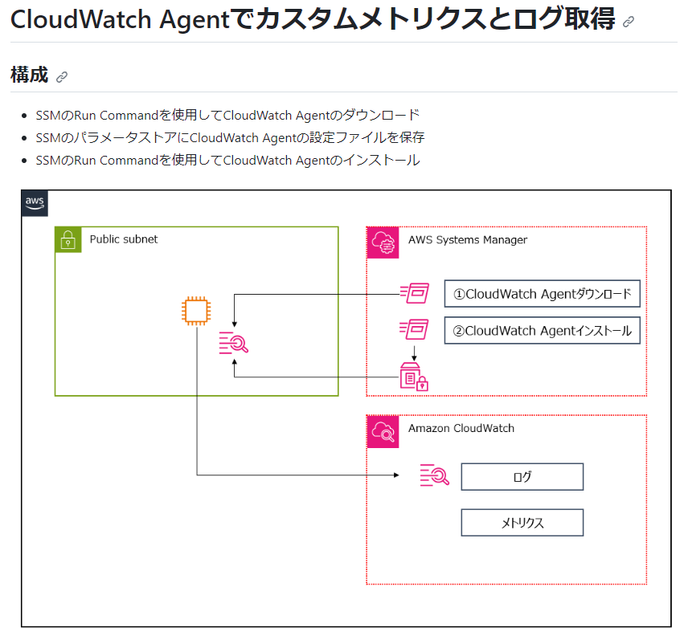
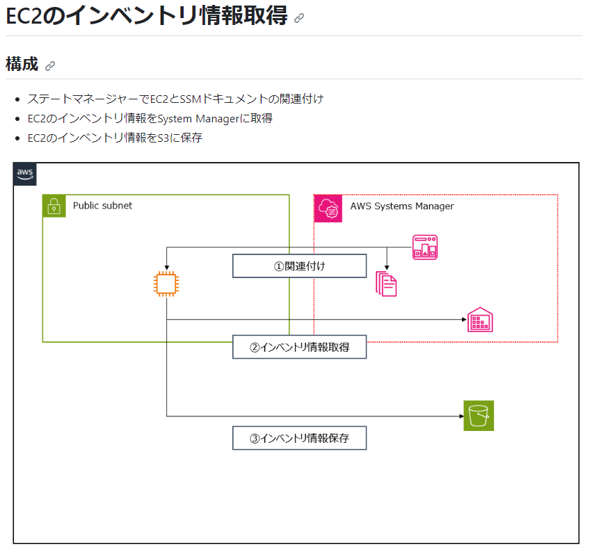
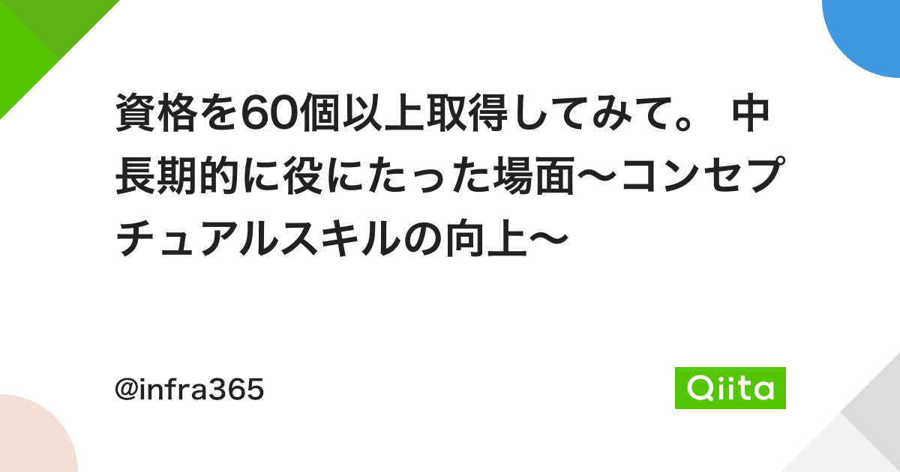
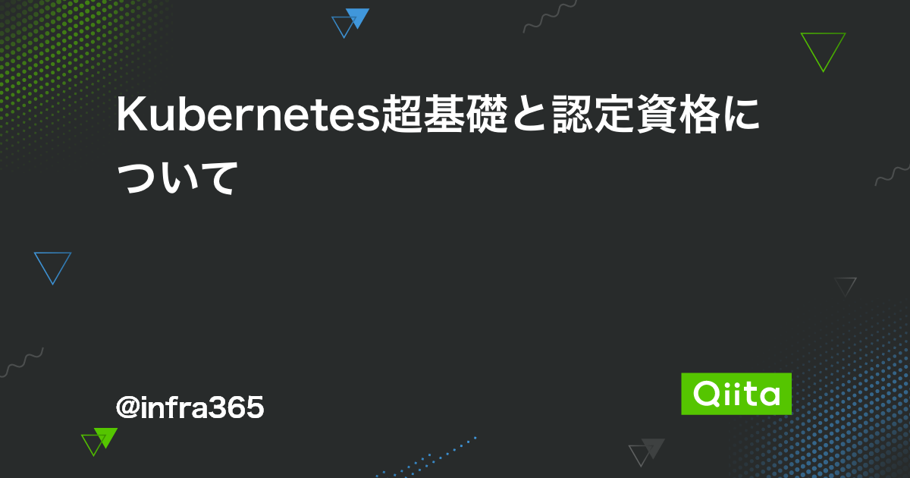

|
AWSやコンテナなどの基礎を学習する勉強会を定期的に主催しています。 下記は勉強会の開催概要資料と第3回勉強会のアーカイブ動画になります。 勉強会の詳細はconnpassを参照下さい。 |
|
|
JAWS-UGなど外部勉強会での登壇資料です。 その他の登壇資料はSpeaker Deckを参照下さい。 |
|
|
下記はAWSのCDKやCFnのコードをパターン別に作成したものになります。 その他のリポジトリはGitHubを参照下さい。 |
|
|  |  |
|
取得済みの資格を記載しています。 下記Qiitaに資格に関する記事を書いております。 |
|
|  |  |
| ORACLE MASTER Gold 10g | ORACLE MASTER Expert RAC |
| ORACLE MASTER Expert Oracle on Linux | MSCA Windowd Server 2008 |
| MSCA Windowd Server 2016 | MCTS:Microsoft SQL Server 2008 |
| LPIC Level 3 Core | LPIC Level 3 Specialty |
| OSS-DB Silver | Comptia Server+ |
| Comptia Network+ | Comptia Secutiry+ |
| Comptia Project+ | Comptia Cloud+ |
| CCNA Routeing and Switch(期限切れ) | Python 3 エンジニア認定基礎試験 |
| Python 3 エンジニア認定データ分析試験 | ITIL Foundation v3 |
| ITIL Foundation v4 | Sun 認定Java プログラマ（SJC-P） |
| ITコーディネーター(期限切れ) | AWS Solutions Architect – Associate |
| AWS Solutions Architect - Professional | AWS Developer - Associate |
| AWS DevOps Engineer - Professional | AWS Security - Specialty |
| AWS Database - Specialty | AWS SysOps Administrator - Associate |
| AWS Machine Learning – Specialty | AWS Data Analytics - Specialty |
| AWS Cloud Practitioner | AWS Advanced Networking - Specialty |
| AWS SAP on AWS - Specialty | Azure Fundamentals(期限切れ) |
| Azure Administrator Associate(期限切れ) | Azure Solutions Architect Expert(期限切れ) |
| 応用情報技術者 | 情報セキュリティスペシャリスト |
| ネットワークスペシャリスト | 情報セキュリティマネジメント試験 |
| 情報処理安全確保支援士試験（未登録） | 電気通信主任技術者（伝送交換） |
| 電気通信工事担任者 AI/DD総合種 | 第2種電気工事士 |
| 認定電気工事従事者 | 第二級陸上特殊無線技士 |
| 第二級海上特殊無線技士 | 消防設備士乙4 |
| 消防設備士乙6 | 危険物取扱者乙4 |
| ボイラー技士2級 | 日商簿記2級 |
| 全経簿記上級 | 証券外務員二種 |
| 認定Kubernetes管理者（CKA） | 認定Kubernetesアプリケーション開発者（CKAD） |